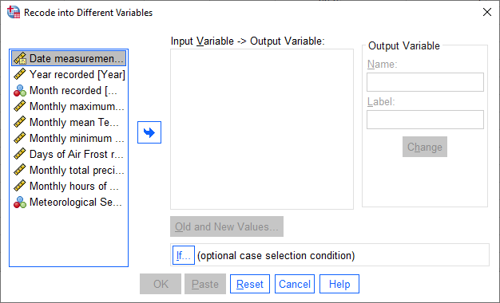
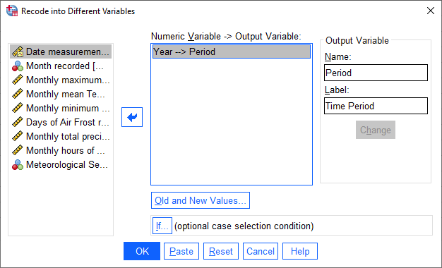
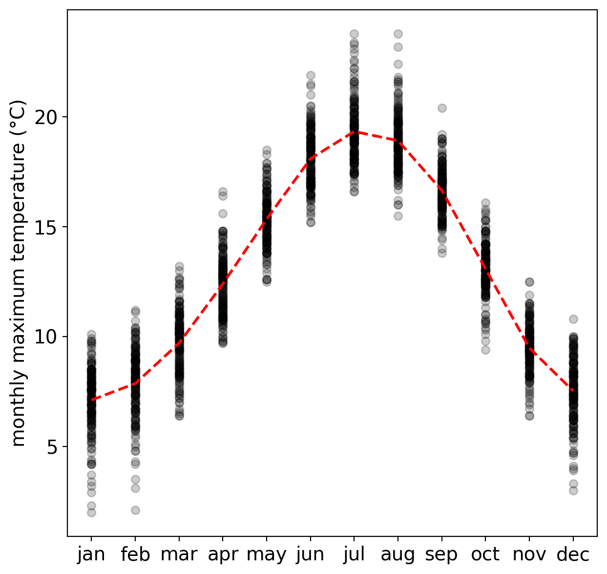
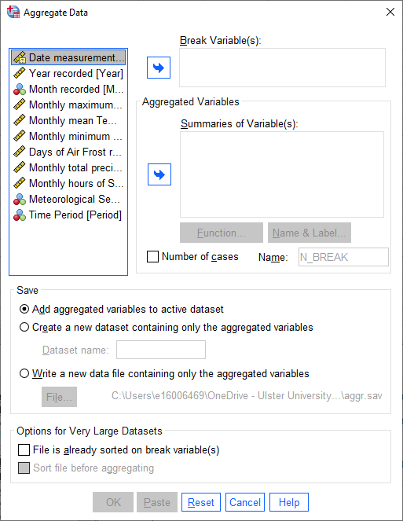
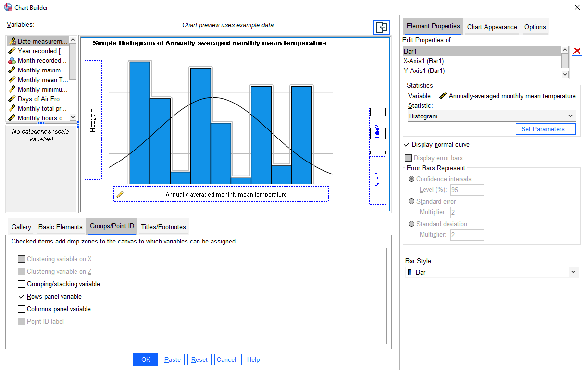
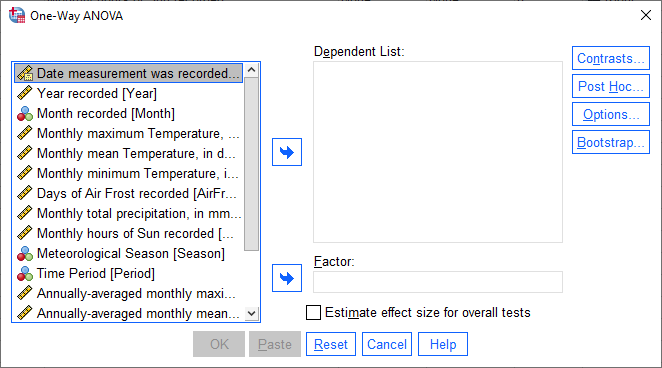
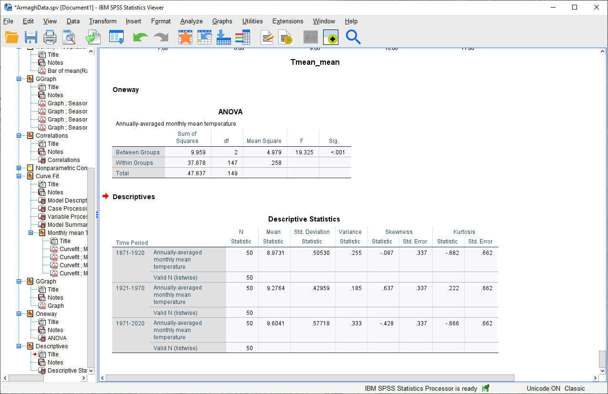
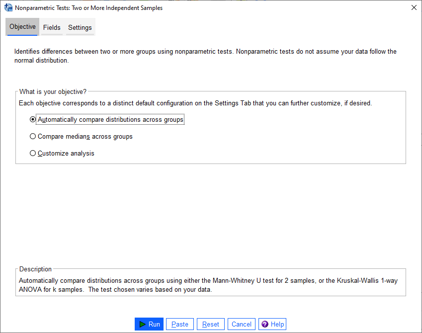
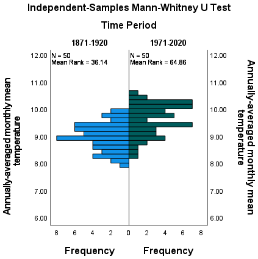

hypothesis testing using spss#
The purpose of this practical is to continue introducing you to SPSS, and complement the theoretical material presented in the lectures, discussions, and reading material. The experience gained in analyzing and presenting data should also help you continue to develop your confidence in using, presenting, and discussing numerical results.
In this practical, we will see how we can use SPSS for testing hypotheses. We will gain practice formulating the null and alternative hypotheses, and in selecting appropriate statistical tests.
getting started#
Warning
If you have not yet completed all the steps from the Week 6 and Week 7 practicals, you should stop here and make sure that you finish them before moving forward.
To get started, open SPSS and re-open the ArmaghData.sav and ArmaghData.spv files that you have been working
with over the past two weeks.
If you are not sure how to do this, have a look at the instructions from last week as a refresher.
re-coding values#
Our goal in today’s practical is to make comparisons of the differences in monthly mean temperature between three different time periods: 1871-1920, 1921-1970, and 1971-2020.
To do this, we will first need to use Recode into different variables, like we did in Week 6 to group our data into meteorological seasons.
To begin, open the Recode into different variables dialog (Transform > Recode into different variables).
{kind=link}
We want to recode the Year variable into a new variable, Period, which corresponds to one of the three time
periods that we’re looking at. To do this, select the Year variable from the list of variables, type “Period” into
the Name field, and add a Label.
Click Change to apply the new variable:
{kind=link}
Next, click on Old and New Values to tell SPSS how to recode the Year variable into the Period
variable:
{kind=link}
For each period, select Range and enter the starting and ending years of the period. Under New Value,
give the period 1871-1920 a Value of 1, 1921-1970 a value of 2, 1971-2020 a value of 3, and all other values a
value of zero:
{kind=link}
Click OK. You should see the new variable created in the Data Editor window. Under the Variable View
tab, add Value Labels for each value of Period, like you did previously for the Month and Season
variables.
You should also change the Width and Decimals for the Period variable to be 2 and 0, respectively, and make
sure that the Measure is set to Nominal:
{kind=link}
Once you have done this, move on to the next section.
aggregating data#
Before we proceed, we will deal with one other issue: our temperature variables have something called “serial correlation” - that is, they are not completely independent.
The reason for this is that the temperature fluctuates throughout the year, according to a pattern: we generally have cooler temperatures in the winter, temperatures increase through the spring into the summer, and then temperatures decreases through the autumn into the winter:
{kind=link}
One way that we can help mitigate this is to Aggregate the data - that is, average values together (or take
their sum) based on some grouping variable.
Because we are interested in looking at changes over a number of years, we’ll look at the annual average.
To proceed, select Aggregate from the Data menu:
{kind=link}
The variable that we want to use for grouping goes in the Break Variable(s) field - because we want to
aggregate using the Year variable, it should go here.
The Aggregated Variables are all of the variables that we want to calculate annual averages for.
In this practical, we will only look at the monthly mean temperature, but you can add each of the meteorological
variables here, except for AirFrost1, in case you are interested in additional practice later on:
{kind=link}
Leave the other choices as they are, then click OK. You should see that your new variables are added to the
Variable View in the Data Editor window:
{kind=link}
Remember to add Labels for the new variables, too, to help you distinguish these annually averaged variables
from the originals.
Warning
If you skip the next step, your analysis and results will end up looking very different from what is shown here.
As a final step, open the Select Cases (Data > Select Cases) dialog, and choose If condition is satisfied, then click If to tell SPSS what condition to use to select cases.
For the remaining steps of this practical, we want to select only cases where Period is greater than zero.
We also want to select cases from a single month, to ensure that we only have one value per year. To do this,
enter the following formula into the condition field:
(Period > 0) & (Month = 6)
{kind=link}
This way, we only consider cases from the three time periods we are interested in studying: 1871-1920, 1921-1970,
and 1971-2020. By selecting only a single month (June), we also ensure that we are dealing with a single value
per year.2
Click Continue, then click OK in the Select Cases dialog to apply the selection.
plotting histograms#
Before we proceed to the hypothesis tests, let’s have a look at the histograms of monthly mean temperature, divided into our three periods.
Open the Chart Builder dialog, and set up a histogram plot using Tmean_mean - if you’re not sure of the steps,
have a look back at where we did this in week 6. Make sure to check the
Display normal curve option for the chart.
Warning
This should be the mean of the Tmean variable that you calculated in the Aggregate step, NOT the
Tmean variable itself!
Once you have set up the histogram, click on the Groups/Point ID tab, then select Rows panel variable:
{kind=link}
You should notice that in the example plot window, a Panel? button appears. Add the Period variable to
this button, in the same way that you added Tmean_mean to the X-Axis? button. You should see that the example
histogram changes to show three panels:
{kind=link}
Click OK. You should see a three-panel histogram appear in the Statistics Viewer window:
{kind=link}
Question
Look at the three histograms. What do you notice about the distribution of the three periods (1871-1920, 1921-1970, and 1971-2020)?
Pay attention to the position of the peak of the normal curve (the mean value), but also the width of the peak (the standard deviation), as well as whether the data appear to be skewed in a particular direction.
What can you say about the distribution of mean temperature across the different time periods?
Tip
Remember to save both the .sav and .spv files before continuing!
one-way anova#
From the plot of the histograms for each time period, it looks like the mean of the annual temperatures is different in each time period. Not only that, but the mean annual temperature is increasing over time: 1921-1970 was warmer than 1871-1920, and 1971-2020 was warmer than 1921-1970.
As discussed in this week’s lecture, one-way analysis of variance (ANOVA) is a technique that can help us determine whether there are significant differences in the means of three or more categories or groups of variables.
Question
Why are we using one-way ANOVA to determine whether there are differences between three groups of data, rather than conducting multiple tests of two variables?
Question
Formulate the null and alternative hypotheses for this test.
To perform a One-way ANOVA test in SPSS, select One-Way ANOVA from the Analyze menu (Analyze > Compare Means and Proportions > One-Way ANOVA):
{kind=link}
We want to look at the differences in annual mean temperature between the different time periods - so,
Tmean_mean should go in the Dependent List, and Period should go in the Factor field:
{kind=link}
Click OK. You should see the following table added to the Statistics Viewer window:
{kind=link}
This table tells us the results of the One-way ANOVA test. The first column tells us the Sum of Squares
between groups (\(SS_{\rm treatment}\)) and within groups (\(SS_{\rm error}\)), as well as the total sum of
squares (\(SS_{\rm total}\)).
The second column tells us the number of degrees of freedom (df), and the third column tells us the Mean Square values between (\(MS_{\rm treatment}\)) and within (\(MS_{\rm error}\)) groups, calculated by dividing each Sum of Squares by the corresponding degrees of freedom.
Finally, we can see the F-statistic (F) and the corresponding p-value (Sig.), based on the F-distribution calculated using the degrees of freedom in the table.
Using our default significance level of \(\alpha = 0.05\), there appears to be a significant difference between at least one pair of groups - that is, they do not all appear to have the same population mean.
Question
What is the formal way to state the outcome of the test, in terms of the null hypothesis?
Remember that ANOVA only tells us whether there is a difference between at least one pair of groups - it doesn’t tell us what the difference is, or even which groups. For that, we need to do additional tests, called post hoc tests.3
independent samples t-test#
To start looking further into this, we will use the independent samples t-test to see whether there is a difference between the earliest time period (1871-1920), and the latest time period (1971-2020).
Question
Why are we using the independent samples t-test to compare the difference in mean temperature between these two time periods, rather than some other test?
checking the equal variances assumption#
Remember that one of the things we should check is whether or not our samples have “similar enough” variances - if they do, then we can use the pooled variance form of the independent t-test, rather than “Welch’s t-test”.
SPSS will actually do both versions of the test for us, but we can still check whether it’s a valid assumption using the Descriptive Statistics.
Before we do that, though, make sure to Split the data by period, so that there is a row in the output table for each time period.
Warning
No, seriously, make sure that you Split the data on the Period variable before continuing.
Open the Descriptives dialog (Analyze > Descriptive Statistics > Descriptives), then select only the
Tmean_mean variable:
{kind=link}
Next, click on Options to select which descriptive statistics to calculate:
{kind=link}
At a minimum, we want to calculate the Variance, but calculating the Kurtosis and Skewness will also
help us figure out whether our data are at least approximately normal or not. Make sure to select at least these three
statistics before clicking Continue followed by OK to calculate the statistics.
You should see the following table added to the Statistics Viewer window:
{kind=link}
Look at the Variance column for the three periods - from this, you should see that the variances are indeed
“similar enough” - that is, if we take the ratio of any two of these, the ratio will be between 2 and 0.5.
checking the normality assumption#
The next thing to check is the assumption of normality - that is, that the data are approximately normally distributed.
Question
Look at the Descriptives table that you just created - what values of Kurtosis and Skewness do you see?
What do these values tell you about how normal each distribution is? Which of the three time periods comes closest to a normal distribution?
In addition to measures like kurtosis and skewness, we can also use SPSS to create Q-Q plots, which will plot the distribution of quantiles of our data against the theoretical quantiles that we would expect from a normal distribution with the same mean and standard deviation.
To create these plots in SPSS, open the Q-Q Plots dialog (Analyze > Descriptive Statistics > Q-Q Plots).
In the dialog that opens, add the Tmean_mean variable to the Variables field, and leave the other options as-is:
{kind=link}
You should see a series of plots added to the Statistics Viewer window, two for each period:

In addition to plotting the Q-Q plot, SPSS also plots the de-trended Q-Q plot, which shows the difference
between the points in the Q-Q plot from the black line:
{kind=link}
{kind=link}
From both of these, we can see that the 1971-2020 deviates from the normal distribution by quite a bit. More
importantly, though, we see a systematic deviation: there is a clear pattern in the plot on the left, indicating that
the differences are not entirely random.
In Week 6, we discussed what this means in the context of linear regression, but it means something similar here - when we see systematic differences in the de-trended Q-Q plot, it indicates that the data are not normally distributed.
Question
Have a look at the plots for the other time periods - what do you notice? Are there any time periods that do appear to have random differences?
Question
Even though we have determined that (at least one) of the time periods isn’t particularly normally distributed, why can we still justify using Student’s t-test to compare the difference in sample means?
the t-test#
Warning
Before proceeding, make sure that you turn off the Split for the file by choosing Analyze all cases, do not create groups in the Split File dialog.
To perform the independent samples t-test, open the Independent-Samples T Test dialog (Analyze >
Compare Means and Proportions > Independent-Samples T Test). Add Tmean_mean as the Test Variable, and
Period as the Grouping Variable, and uncheck Estimate effect sizes.
{kind=link}
Next, click on Define Groups to choose which two groups to test, and enter 1 and 3 to test the data from
1871-1920 against the data from 1971-2020:
{kind=link}
Click Continue - you should see the entry in the Grouping Variable change:
{kind=link}
Click OK to run the test. You should see two tables added to the Statistics Viewer window: one provides
the same information that we saw with the Descriptive Statistics step: the mean, standard deviation, and standard
error of the mean:
{kind=link}
The second table provides information about the test, with one row where with the test is performed assuming
that the variances of the two populations are equal, and the second where the test is performed without this
assumption.
The first two columns, F and Sig., are the results of a statistical test for equality of variance (Levene’s Test for equality of variances), providing the F-statistic and p-value for the test. From this, we can see that there is not sufficient evidence to conclude that the variances between the groups are different - since we checked this assumption already, it shouldn’t be too surprising.
The remaining columns give us the results of the test:
t is the value of the t-statistic for both versions of the test;
df is the number of degrees of freedom;
One-sided p and Two-sided p give the p-value for the one-sided and two-sided versions of the test, respectively;
Mean Difference gives the estimate of the difference between the mean values of the two groups;
Std. Error Difference gives the estimate of the standard error of the difference between the mean values;
Lower and Higher give the lower and upper bounds of the 95% confidence interval of the estimate of the difference.
From this table, we can see that at the \(\alpha = 0.05\) level of significance, there is a significant difference between the mean values of the annually averaged values of the monthly mean temperature between 1871-1920 and 1971-2020.
The estimate of the difference, at least in the table shown above, is -0.631°C, meaning that on average, 1971-2020 was 0.631°C warmer than 1871-1920 (the difference is calculated by subtracting the estimate of the second group from the estimate of the first group).
Question
Formulate the null and alternative hypotheses for this test, and formally state the result of the test.
Question
Using the estimates of the difference of the means and the standard error of the difference, write the 95% confidence interval as \(\Delta\mu\pm\beta\), where:
\(\Delta\mu\) is the estimate of the difference between the means
\(\beta = \alpha * \sigma\) is the multiple of the standard error of the difference (\(\sigma\)) used for the 95% confidence interval.
Tip
Remember to save both the .sav and .spv files before continuing!
mann-whitney u-test#
The final test we will look at in this practical is the Mann-Whitney U-test, a non-parametric statistical test.
Question
Why are we using the Mann-Whitney U-test, instead of one of the other non-parametric tests introduced in the lectures?
As we covered in this week’s lectures, unlike the independent samples t-test, the Mann-Whitney U-test and other non-parametric tests do not require that our data follow a particular distribution. For this example, we will compare the result of the Mann-Whitney U-test to the independent samples t-test, to see if there are any differences.
Before running the test, we want to select only two groups of our Period variable. Open Select Cases, then
click on If to change the selection criteria we use. In the computation field, add the following expression:
(Month = 6) & ((Period = 1) | (Period = 3))
{kind=link}
The | (OR) symbol tells SPSS to select cases where either Period equals 1 or Period equals 3.
Click Continue, followed by OK. In the Data Editor window, you should see only cases where Month equals
6, and Period equals either 1 or 3.
Warning
If you skip the previous step, the test will still run, but your outputs will look different because the test will perform multiple comparisons.
First, open the Nonparametric Tests: Two or More Independent Samples dialog (Analyze > Nonparametric Tests > Independent Samples):
{kind=link}
We’re going to run a custom analysis, so select Customize analysis, and then click on the Fields tab:
{kind=link}
Just like with the independent samples t-test, add the Tmean_mean variable to the Test Fields field,
and select the Period variable for the Groups:
{kind=link}
Click on the Settings tab, select the Mann-Whitney U (2 samples), and de-select
Median test (k samples):
{kind=link}
Click Run to run the test. You will see quite a bit more output from this test:
{kind=link}
The results of the test are shown in this table:
{kind=link}
This table tells us the number of samples, the values of the U and W test statistics, the
standardized test statistic (i.e., the z-score of the test statistic using the normal assumption), and the p-value
for the two-sided test.
From this table, we can see that the p-value of the standardized test statistic is < 0.001, indicating that at the \(\alpha = 0.05\) significance level, there is enough evidence to reject the null hypothesis.
The “population pyramid” shows the histograms of the monthly mean temperature for the two time periods, with the temperature value plotted on the vertical axis, and the frequency plotted along the horizontal axes:
{kind=link}
On the plot, we can also see the mean rank for the two distributions: the 1871-1920 period has a mean rank of
36.14, while the 1971-2020 period has a mean rank of 64.86. This indicates, as we can also see from the histogram,
that most of the smaller values are contained in the 1871-1920 period, and the larger values are contained in the
1971-2020 period. In other words, the median value of the second time period is larger than the first.
Question
Formulate the null and alternative hypotheses for this test, and formally state the result of the test.
Warning
If you are working on a lab computer, make sure that you upload the .sav and .spv files to OneDrive BEFORE leaving the computer lab.
If you do not, you will lose your work, and you will need to re-complete the steps of this practical to be able to answer the questions on the assessment!
next steps#
This is the end of the Quantitative Skills portion of EGM101. Once you have completed each of the practicals and answered each of the questions found within the instructions, you should be ready to complete the assessment questions posted on Blackboard.4
If you are looking for additional practice, try the following suggestions:
Instead of looking at the differences between 1871-1920 and 1971-2020, look at the differences between 1921-1970 and 1971-2020.
Question
How do the results of this independent samples t-test compare to the results for 1871-1920 and 1971-2020?
Change the Select Cases condition from
(Month = 6) & ((Period = 1) | (Period = 3))back to(Month = 6) & (Period > 0). Next, run the non-parametric Independent Samples test, but instead of the Mann-Whitney U test, select the Median test (k samples) option.
Question
How do the results of these tests compare to the Mann-Whitney U-test and the independent samples t-tests that you have run? Are you able to make the same conclusions about the differences between the groups?
notes#
- 1
Because most months have a value of 0 for
AirFrost, it would make more sense to take the sum of this variable instead of the mean.- 2
The choice of June here is entirely arbitrary - because SPSS has assigned the same aggregated value to each case within a year, choosing any single month will work.
- 3
In what follows, we’ll select a single pair of periods to compare. To correctly compare the means of more than two groups, however, we need to adjust the p-value to account for the fact that we’re doing multiple comparisons. One way to do this is using the Post Hoc button on the right-hand side of the dialog - in this dialog, you can select the different tests to use to account for multiple comparisons.
- 4
This is because, as is hopefully now clear, the questions on the assessment are drawn almost exclusively from the questions I have asked throughout each of the four practicals.